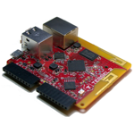
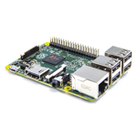
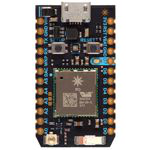

choose your board...
The board you decide to start with will affect how much the project is going to cost as well as the overall ease of completing it.

Intel Edison
Device: $50
Kit: ~$130

Tessel 2
Device: ~$35
Kit: ~$50

Raspberry Pi 2
Device: ~$40
Kit: ~$55

Particle Photon
Device: ~$19
Kit: ~$35
get this...
The list of materials below will change depending on which board you choose above. Next to each item, you'll find links to purchase online. Some of these components like the resistors and jumper wires are best bought in bulk to keep your cost low. I'm included the cost of reasonably sized kits for such components.
| Item | Price | Link |
| Monkey | $12 | Amazon |
| Intel Edison | $50 | Sparkfun |
| Edison battery module | $25 | Sparkfun |
| Edison GPIO module | $15 | Sparkfun |
| Tessel 2 | $35 | Tessel.io |
| Raspberry Pi 2 | $40 | Sparkfun |
| Photon | $19 | Sparkfun |
| MOSFET | 88¢ | Digikey |
| 1/4W Resistor Kit | $15 | Digikey |
| Drill and 1/6" drill bit | ||
| 2' 22-gauge wire | ||
| Short M-F jumper wires | $3 | Digikey |
| 20-pin Pin Header Strips | $6 | Digikey |
| Micro-USB cable and power source | $2 | |
| 2 AA batteries | 60¢ |
do this...
-
Modify the Monkey
This monkey comes out of the box ready to entertain the masses with a simple on/off switch on his underside. That sort of monkey business won't work for us though! We need to be able to control it programmatically.
So the first thing we need to do is inspect our monkey's downstairs and see how the switch works.
Here's what I see...

Every project is different. Here's what I'm looking for.
We're dealing with a complete circuit here. There are two AA (1.5V) batteries and they're hooked up in serial, so that means that this monkey runs on 3V and some unknown amount of current will be drawn.
You don't often know how much current any given load is going to require. You could put meters in the circuit and measure, but the better thing to do is to simply leave a circuit as is with it's own power source and everything. The other option would be to attempt to merge the circuits of our load (the monkey) and our microprocessor, but that's where you have to be careful. Microprocessors tend to cost real dollars. Ironically, the Edison I'm going to introduce soon - an amazing work of engineering art - is only 3x the price of this silly mechanical monkey! The inner workings of computers are child's play compared to the inner workings of our global economy. But I digress. My point was that you don't want to toast your Edison. So we want to control the monkey by simply doing the equivalent of turning the switch on an off.
What we discover in this monkey's butt is that the switch on the outside of the trapdoor is simply connecting or disconnecting the ends of the batteries and completing or breaking the circuit. So let's do the same. Let's simply tap into the two contacts with some wires, run them out, and use software to virtually touch the ends of the wire together.
We need to run wires outside all clean like, so let's drill some very small holes through the trap door and run wires through. Then we'll set up a soldering station and solder the wires directly to the contacts.

Now we can close the door and we've got two wires that when touched together complete the circuit and set the monkey in motion. Conveniently, we have not disabled our on/off switch, so if we wish to use it to turn the monkey on, we can still do that.
And just like that, we're done with surgery. Your monkey should recover nicely.
-
Complete the Circuit
[this section will change depending on the type of board selected]
-
Sign up for Twitter Access Keys
[this section will stay the same regardless of the type of board selected]
-
Write the Code
We're going to be writing JavaScript in a Node.js project on this Intel Edison to get this monkey grooving. If you are pulling an Edison out of the box and need help setting it up, have a look at codefoster.com/edison-setup. For the rest of this article, you'll need your device to be all configured and on the same wifi network as your host PC (the one you're using Visual Studio on) and you'll need to know the IP address and the login password.
If you haven't already, go to visualstudio.com and download and install Visual Studio Community 2015. Then go to http://nodejstools.codeplex.com and download and install the Node.js Tools for Visual Studio.
Now clone https://github.com/codefoster/tweetmonkey.git and open the tweetmonkey.njsproj file in Visual Studio. Let me point out a few things about this project.
- There's a config.js file that you need to fill in with your particulars.
- Go to apps.twitter.com and create a new app to get the Twitter API keys and secrets.
- There's a gulpfile.js that has a deployment project. The IP address and password you enter into the config.js will determine where this project gets deployed.
- There's a
{ track: '#cfmonkey' }in the app.js that you need to change the value of. This is what the search is going to look for. This is not looking for tweets from a user actually, but rather looking for tweets with certain text in the body. I will try to update the GitHub repo with comments for how to search for tweets to a certain user. - The code in the app.js is hooking into Twitter's "streaming API". This means that you don't have to poll the service every second to see if any relevant tweets have landed yet. Rather, Twitter will look for them and when one does land, it will call the your code's function. That's a thing of beauty!
-
Run the App
Ideally, I'd have another gulp task for executing the Node.js project on the device, but I haven't quite figured that out yet, so I just SSH to the device and run it.
I'll assume you're all set up for using SSH since you've supposedly gone through my http://codefoster.com/edison-setup article already.
To SSH, use...
ssh root@192.168.1.13(or whatever your IP address happens to be)Once on the device, cd to the project directory (it should be in the default location depicted by the ~ in the prompt - this is likely /home/root) and then use...
node app.js
So there you have it - a simple, end-to-end tweet monkey! Just what everyone needs.
I hope you had fun with the monkey specifically, but more importantly, I hope you're just a little bit more comfortable hooking into an existing electronic circuit and using logic from a program you wrote to manipulate it. When you get the concepts behind the procedures, you really start to see the possibilities, and that is the heart of the maker movement.
I recorded a session about Tweet Monkey's older brother - Command Monkey as a CodeChat episode with my colleague Jason Short (@infinitecodex). Here you go...
This is a very, very simple maker project. It's clean. It's easy. It's quick. I'm hoping the process and architecture inspire you to make something of your own, and I hope the world of possibilities in this space start opening up for you as they are for me (as evidenced by my fantastically long project idea list).